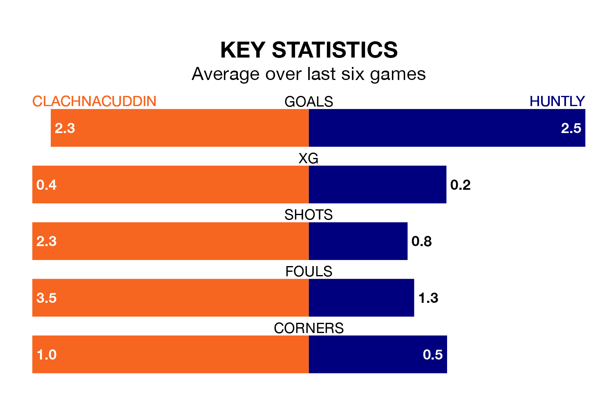

Huntly travel to Clachnacuddin on early Saturday in Highland Football League.
The visitors come into the game on the back of a win in their last match, having beaten Deveronvale 5-1 at home.
Clachnacuddin, meanwhile, lost their last match, 3-0 against Formartine United.
With 55 goals in 20 games so far this season, Huntly are the league's second-highest scorers with 2.8 goals per game. And they are conceding at an average rate, letting in 38 goals at a rate of 1.9 per game.
Clachnacuddin, meanwhile, are below average scorers, with 1.4 goals per game, compared to a league average of 1.9. They have conceded 3.0 goals per game.
The hosts are 16th in the table after 22 games, of which they have won two and drawn six, earning 12 points.
The away team are eight places ahead of Clachnacuddin in eighth, with 10 wins and three draws putting them on 33 points.
In the last 10 years, Clachnacuddin and Huntly have played each other on 13 occasions. Clachnacuddin won seven of them, Huntly three, and they drew three times.
On average, Clachnacuddin scored 1.6 goals and Huntly 1.8 in those matches.
Their last meeting was on September 30, when Huntly won 8-0 at home.
Clachnacuddin are in mixed form in Highland Football League, with two wins and two draws from their last six games.
With two wins and a draw over that period, Huntly's form is slightly worse – they have taken seven points from 18, compared to the home side's eight.
Updated: 15:45 (UTC), 02/02/24